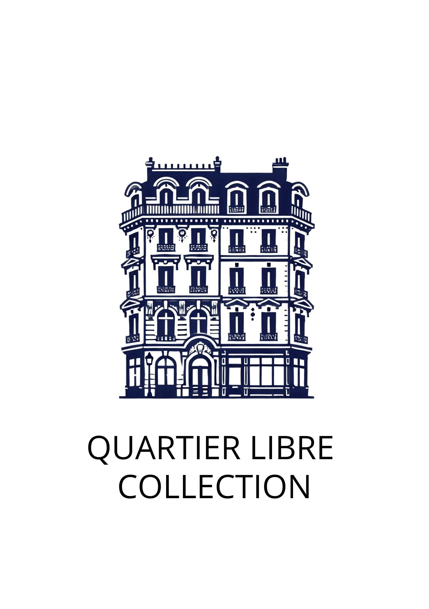

Accueil, bagages, ménage et sécurité. Les robots choisis pour Quartier Libre, et leur intégration par nos soins.
×QUARTIER LIBRE COLLECTION

Sommaire
Quatre parties.
1
Les robots
Les robots, et leur mise en place.
2
La roadmap
L'intégration des robots, clé en main, par nos soins.
3
Le budget
Ce que coûte le pilote, et ce qu'il peut rapporter.
4
Pour aller plus loin
Loop, pour gérer toute votre flotte de robots.
Loop × Quartier Libre Collection
loop
Ce qu'on a compris · rendez-vous du 23 septembre
Trois niveaux de priorité, l'accueil en premier.
P1
Accueil et sécurité
Accueillir les clients le jour, surveiller l'immeuble la nuit.
P2
Bagages
Monter les valises des clients jusqu'à leur chambre.
P3
Ménage
Gagner 30 % de productivité sur le ménage, avec l'équipe interne.
Loop × Quartier Libre Collection
loop
Partie 1
1
Les robots
Les robots, et leur mise en place.
Loop × Quartier Libre Collection
P1 · AccueilP1 · Sécurité
Temi 3
Répond aux clients au comptoir. Un humain prend la main en visio. La nuit, il surveille l'entrée.
8 175 € HT*Retenu
P2 · BagagesPudu T300
Porte 300 kg. Soulève un chariot aux couleurs de l'hôtel, monte et revient seul.
Dès 17 500 € HT**Retenu
P3 · MénageP1 · Sécurité
Dreame L40s Pro Ultra
Aspire et lave, pièce par pièce. La nuit, surveille les étages, caméra allumée.
≈ 500 € HTRetenu
* Prix public de Generation Robots, revendeur en France, applications incluses. Relevé en octobre 2026. ** Prix public de Leobotics, revendeur en France : à partir de 17 500 €, version standard. Version levage et chariot habillé sur devis.
Loop × Quartier Libre Collection
P1 · AccueilP1 · Sécurité
Temi 3
8 175 € HT*Retenu
1 m · 12 kg · écran tactile 13,3 pouces · environ 8 h d'autonomie
* Prix public de Generation Robots, revendeur en France, applications incluses. Relevé en octobre 2026.
Vu en démo
Prise de main à distance native, depuis une appli.
Version levage · 300 kg de charge · se glisse sous un chariot d'hôtel et le soulève
* Prix public de Leobotics, revendeur en France : à partir de 17 500 €, version standard. Version levage et chariot habillé sur devis. Relevé en octobre 2026.
Vu en démo
Porte jusqu'à 300 kg, sur un châssis fait pour durer.
Suit le client, prend l'ascenseur, revient seul à la bagagerie.
Version levage : se glisse sous un chariot et le soulève.
La version levage a un look sympathique comparé à un Pudu classique.
Imposant : 84 × 50 cm, 65 kg.
Solutions alternatives :
✕
Piaggio KiloSur devis
Pas encore disponible en Europe, seulement sur devis.
✕
Pudu FlashBotSur devis
Ne porte pas assez lourd : pas fait pour des valises.
✕
EffiBOT, TwinswHeelSur devis
Pensés pour les entrepôts, à habiller et à sécuriser.
AccueilCheck-in, check-out et questions : 1 h 30 libérée par jour × 25 €14 000 €
Ménage8 % d'heures de ménage en moins × 230 000 €*18 000 €
Sécurité2 incidents évités par an × 5 000 €**10 000 €
* 1 M€ de ménage par an pour 130 appartements, ramené à un immeuble de 30 appartements comme Saint-Georges. ** 2 incidents par an, selon vous. 5 000 € : notre estimation du coût moyen d'un incident (dégâts, geste commercial).
Loop × Quartier Libre Collection
loop
Partie 4
4
Pour aller plus loin
Loop, pour gérer toute votre flotte de robots.
Loop × Quartier Libre Collection
loop
Partie 4 · Pour aller plus loin
Loop × Greg.ai
Greg.ai pilote l'hôtel.Loop lui branche les robots.
Greg.ai est déjà relié à Slack, Gmail et WhatsApp. Loop s'y branche de la même façon : Greg voit les robots et leur confie des tâches. C'est pour ça qu'on a choisi des robots avec des API ouvertes.
LoopTemi · T300 · Dreame
S
SlackL'équipe
GmailE-mails des clients
WhatsAppMessages des clients
Greg.aiIA d'opérations de l'hôtel
Loop × Quartier Libre Collection
loop
Vue d'ensemble · maquette interactive
Grâce à Loop, tout votre immeuble sur un seul écran.
Les étages
Le ménage avance en direct. Un problème passe au rouge.
Les robots
Position, batterie et mission de chaque robot.
À traiter
Une seule liste, triée par urgence. L'action est à un clic.
loop
Le ménage, étage par étage
Temi à l'accueil
Les problèmes, du plus urgent au moins urgent
Loop × Quartier Libre Collection
loop
P1 · Accueil
P1Accueil
Le Temi accueille. L'humain prend la main.
Votre besoin
Une présence à l'accueil sans recruter, y compris quand le réceptionniste est dans les étages ou en pause.
Le Temi répond seul aux questions courantes, en plusieurs langues.
Si besoin, un humain prend la main en visio, à distance.
Pendant l'échange, Greg retrouve le client dans Mews.
0 %résolus par le Temi
1 h 52Temi seul au comptoir
0 %d'accueil couvert, 7 h – 23 h
loop
Loop × Quartier Libre Collection
loop
P1 · Sécurité
P1Sécurité
Un incident ? Jamais seul à l'accueil.
Votre besoin
Environ 2 incidents par an (intrus, client agressif). Les caméras voient la scène, mais sans le son. Le Temi doit dissuader, pas faire la sécurité.
Un bouton panique, au comptoir ou à distance.
Le Temi enregistre le son et l'image. Un humain apparaît à l'écran.
Les secours s'appellent en un clic, avec l'adresse de l'hôtel affichée.
loop
Loop × Quartier Libre Collection
loop
P1 · Sécurité
P1Sécurité
La nuit, le Temi et le Dreame veillent.
Votre besoin
Une seule personne sur place. La nuit, la réception est tenue à distance.
Le Temi surveille l'entrée. Le Dreame fait la ronde des étages.
Un mouvement à la porte de service : l'équipe à distance envoie le Temi vérifier.
Une caméra en panne : le robot le plus proche prend le relais.
0robots de garde, Temi et Dreame
0personne en plus
23 h – 7 hrondes programmées
loop
Loop × Quartier Libre Collection
loop
P2 · Bagages
P2Bagages
Les valises montent, le Pudu T300 revient.
Votre besoin
Porter les bagages : un des plus gros irritants des clients. Le Pudu T300 porte le chariot jusqu'à la chambre et revient seul à la réception.
1
13:30
Greg envoie le Pudu T300
Check-in confirmé dans Mews, 2 valises.
2
13:31
Le Pudu T300 suit le client
Vitesse limitée, sans le doubler. Loop appelle l'ascenseur.
3
13:36
Retour seul à la bagagerie
Prêt pour le client suivant.
loop
Loop × Quartier Libre Collection
loop
P3 · Ménage
P3Ménage
Elle fait le lit, le Dreame fait les sols.
Votre besoin
+30 % de productivité avec une équipe interne. Des Dreame L40s Pro Ultra partagés entre les appartements, pas un par appartement.
Elle entre dans l'appartement : le Dreame se lance tout seul.
Le Dreame passe sous les lits, un point faible des contrôles qualité.
Jamais de Dreame dans un appartement occupé.
0appartements faits ce matin
3 h 40gagnées pour l'équipe
loop
Loop × Quartier Libre Collection
Pourquoi Loop ? Pour gérer toute votre flotte de robots.
Chaque robot en direct.Où il est, sa batterie, sa tâche, quelle que soit sa marque.
Une seule personne suit toute la flotte.À distance, sur les 9 immeubles : chaque alerte arrive au même endroit.
Chaque nouvel immeuble s'y branche.Avec très peu d'adaptations, des 5 immeubles actuels aux 4 en projet.
Une marque déçoit ? On la remplace.Même écran, même historique : l'équipe ne réapprend rien.
Loop s'intègre à votre domotique.Vos immeubles sont déjà équipés : Loop se branche à la gestion en place, sans rien remplacer.
Loop × Quartier Libre Collection
Et maintenant ? Une priorité à fond, avant les autres.
1
Choisir la priorité
Notre recommandation : l'accueil, pendant 6 mois. Les bagages et le ménage viennent ensuite.
2
Valider le pilote
Le périmètre et le budget de cette priorité, ensemble.
3
Démarrer
À Saint-Georges : on écoute les équipes, puis on installe le premier robot.


 ✕
✕ ✕
✕ ✕
✕) ✕
✕ ✕
✕ ✕
✕ ✕
✕ ✕
✕ ✕
✕ ✕
✕